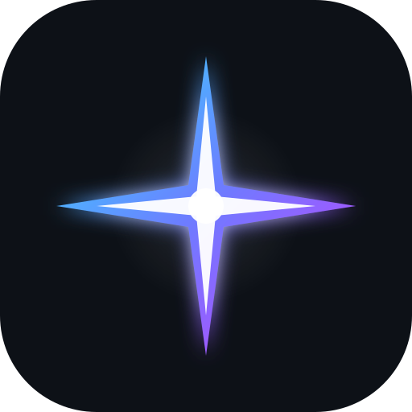

A GPU-native code editor.
VSCode UX and ecosystem, without the Electron overhead — written in Rust, rendered on the GPU with wgpu.
All builds are single self-contained binaries · All releases · Source on GitHub
Every pixel drawn with wgpu — smooth scrolling and crisp text at any zoom.
Explorer, tabs, command palette, search, source control, integrated terminal.
Stage, commit, diff side-by-side, and a change-count badge — no extension needed.
Checks GitHub for new releases and updates itself in place.